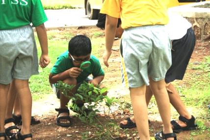

The Founders‘ Garden at the Somaiya Vidyavihar is being developed as a ‘Butterfly Garden’’ i.e. planting butterfly friendly species (nectar plants and food plants) around the Founders’ statue. So, with magnifying glasses in hand the 3 rd grade students of The Somaiya School decided to observe the butterfly eggs and the caterpillars. As soon as we walked into the garden we witnessed the lime butterfly laying eggs on our plant! We then inched closer to the plant and saw eggs smaller than a pinhead and caterpillars of various sizes feasting on the lime leaves.
